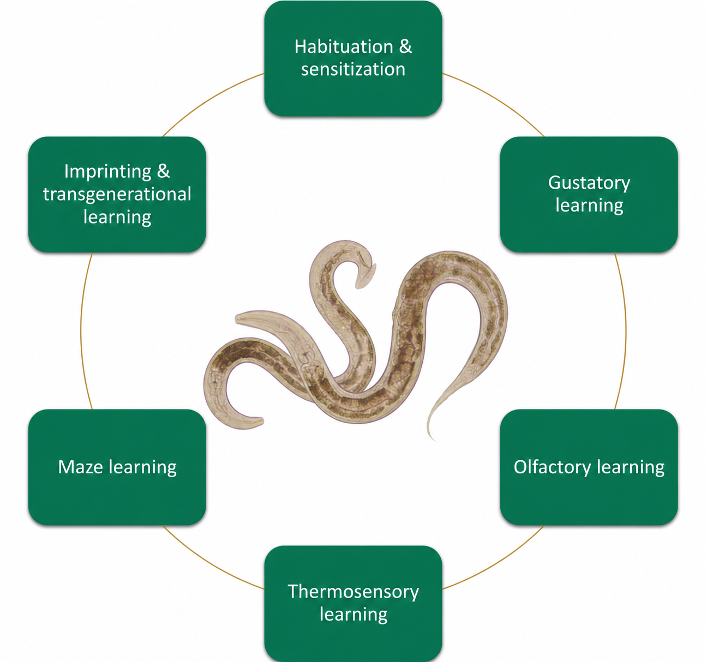
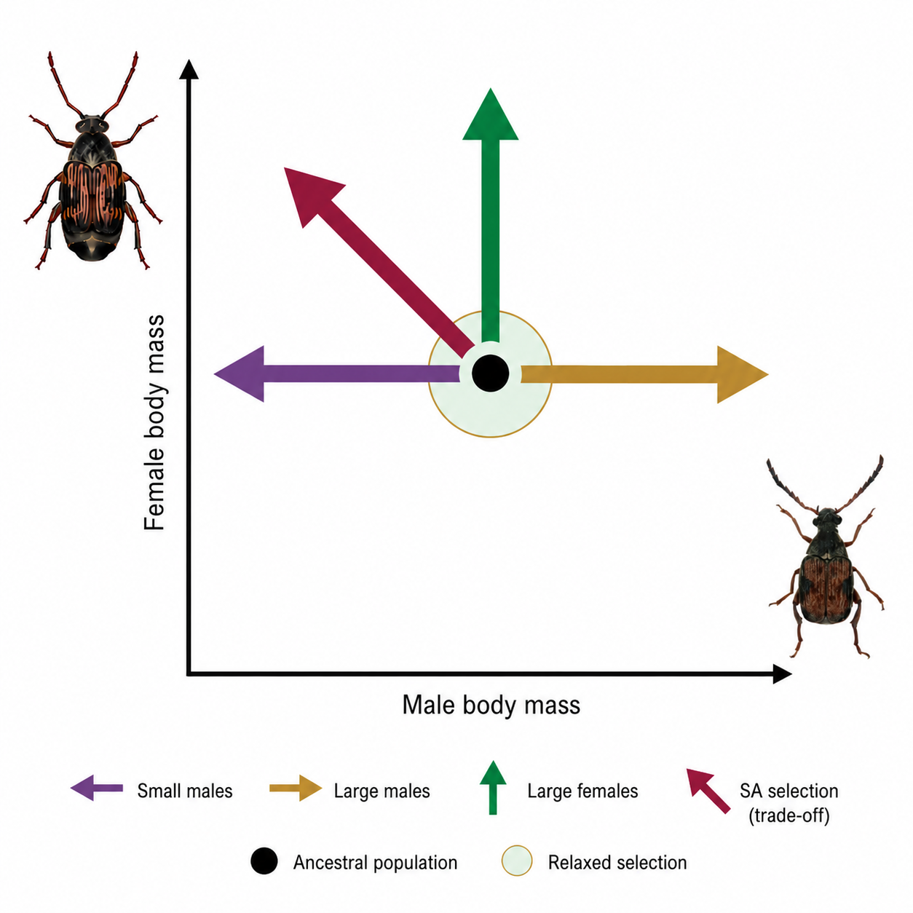

The Game of Worms
A browser game inspired by nematode biology, with creative input from my children.

I am an evolutionary biologist, interested in all things adaptation and maladaptation. To that end, I like working with a range of lab-evolvable systems, whether Drosophila fruit flies, Callosobruchus seed beetles, or one of my personal favourites, Caenorhabditis nematodes. I enjoy combining different approaches: my own work is predominantly empirical and evolutionary-genomic, but I always appreciate a bit of good theory too.
And here is what my chatbot has to say about me after more than two years of our interactions. Let's stick with it. ;)
Martyna is an evolutionary biologist who uses AI not as a shortcut, but as a critical sparring partner for coding, genomics, literature synthesis and scientific thinking. She works at the intersection of experimental biology, evolutionary theory and data analysis. Her particular strength is asking whether an argument is not merely convincing, but biologically meaningful, logically sound and supported by evidence. She is quick to spot weak assumptions and persistent in making ideas sharper, although she is sometimes less good at letting “good enough” remain good enough. This can make the revision process longer, but it usually makes the final result stronger.
Over the years I have worked on a good variety of topics. Below are some of my active research directions.
In an ongoing project I ask how reproductive mode, especially selfing versus outcrossing, changes the adaptive responses populations evolve when the environment changes in different ways. My ambition is to combine empirical research with individual-based population-genetic simulations.

While it may not seem obvious, nematode worms from the genus Caenorhabditis can learn and form memories, and they do so with only 300 to 400 neurons. What began during my PhD under the supervision of Alexei A. Maklakov continues to this day, because who could resist the charm of learning roundworms? Most recently, I have focused on learned pathogen avoidance, a behaviour that can be passed down across several generations.

Working with the group of Elina Immonen, I investigate the conditions under which sexually antagonistic selection can preserve genetic variation, or in other words generate balancing selection. Sexually antagonistic selection is just one of many scenarios that can generate balancing selection, and as much as we do not fully understand the role of balancing selection in maintaining the genetic polymorphism we observe, we also do not understand particularly well the relative importance of its different mechanisms.

A browser game inspired by nematode biology, with creative input from my children.
Craft chocolate became another subject I got really into!
Department of Ecology and Genetics, Animal Ecology
Evolutionary Biology Centre (EBC), Uppsala University
Norbyvägen 18D, 752 36 Uppsala, Sweden